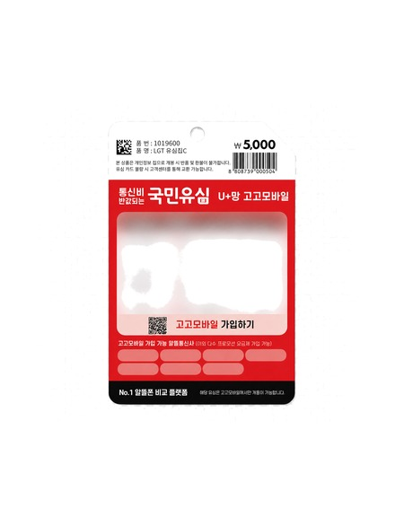
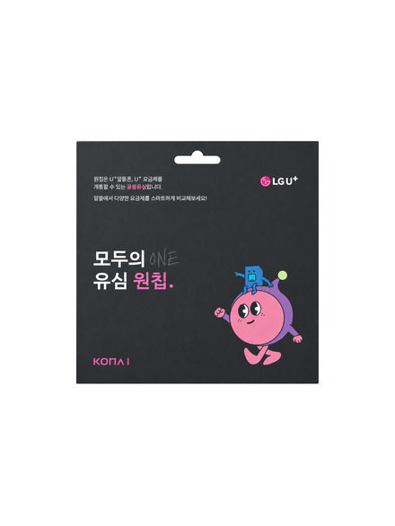

궁금하신 상황을 눌러보시면 더 자세한 안내를 확인하실 수 있어요.
LG U+ 망으로 선불 개통이 가능한 유심은 두 종류예요. 가격만 비교하면 다이소 쪽이 3,800원 더 저렴해요.

다이소 LG 국민유심
5,000원구매처
다이소

LG 모두의유심 원칩
8,800원구매처
이마트24, 배민B마트, 스토리웨이
| 단말기 상태 | LG 유심 사용 가능 여부 |
|---|---|
| 공기계 또는 새 단말기 | ✔ 가능 (통신사 자유 선택) |
| KT 미납 정지 단말기 | ✔ 가능 |
| SK 미납 정지 단말기 | ✔ 가능 |
| LG U+ 미납 정지 단말기 | ✘ 신호 안 잡힘 → KT 또는 SK 유심 필요 |
| 요금제 | 월 기본료 | 음성/문자 | 데이터 |
|---|---|---|---|
| LG 선불29 | 29,700원 | 무제한(부가 50분) / 무제한 | 300MB+1Mbps 무제한 |
| LG 선불36 | 36,300원 | 무제한(부가 50분) / 무제한 | 300MB+3Mbps 무제한 |
| LG 선불38 | 38,300원 | 무제한(부가 50분) / 무제한 | 10.3GB+3Mbps 무제한 |
| LG 선불39 | 39,000원 | 100분 / 100건 | 15GB+3Mbps 무제한 |
| LG 선불55 | 55,000원 | 무제한(부가 300분) / 무제한 | 11GB+매일 2GB+3Mbps 무제한 |
| LG 선불66 | 66,000원 | 무제한(부가 300분) / 무제한 | 매일 5GB+5Mbps 무제한 |
💡 6종 중 유일하게 LG 선불66만 '매일 5GB'를 제공해요. 데이터를 많이 쓰는 분께 유리한 조건이에요.
다이소(5,000원) 또는 이마트24·배민B마트·스토리웨이(8,800원)에서 구입하세요.
9종 인증서 중 하나를 미리 준비해두세요.
요금제를 선택하면 본인 명의로 당일 개통이 완료돼요.
⚠️ 주의하세요 — 유심을 미리 단말기에 삽입하지 마시고, 개통 절차가 완전히 끝난 뒤에 삽입해주세요. 개통 전에 미리 꽂아두면 진행 중 오류가 날 수 있어요.
네, 선불폰 한성모바일은 KT와 함께 SK·LG U+ 선불폰 개통도 취급하고 있어 같은 카카오톡 채널에서 안내받으실 수 있어요.
네, 충전한 금액 범위 안에서만 쓰는 방식이라 신용조회 절차가 없어요. 미납·연체 이력과 무관하게 진행됩니다.
네, 미납된 통신망과 다른 망이라면 정상적으로 신호가 잡혀요.
다이소 국민유심이 5,000원으로, 이마트24의 모두의유심 원칩(8,800원)보다 3,800원 저렴해요.
외국인등록증이나 여권만 있으면 본인 명의로 개통 가능해요.
네, 파산 절차와 선불 개통 심사는 무관하게 진행돼서 문제없이 가능해요.